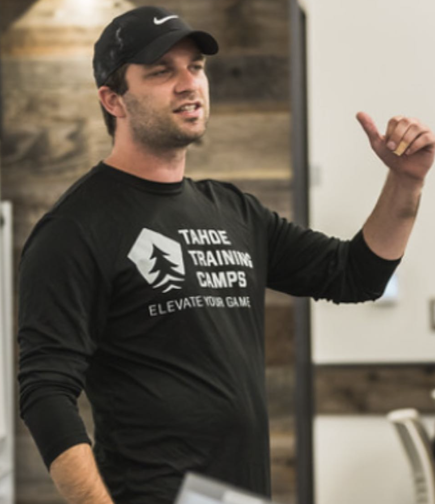

Speaking · Clinics · Staff PD
Zack Etter coached football at UConn, Fordham, and Delaware. He’s also a Certified Mental Performance Consultant and a licensed therapist. When he speaks to coaches about the mental game and athlete mental health, he’s not a guest in their world — he’s from it.

The pre-game / in-game / post-game mental skills system from Zack’s book, translated into practice-week language: routines, resets, and reviews your staff can install on Monday.
Coaches are the first adults to notice when an athlete is struggling. A licensed therapist on what to look for, what to say, what not to say, and when — and how — to escalate.
Resilience, confidence, and accountability that hold up under real pressure — and why the old “toughen them up” playbook is costing programs players.
For ADs, heads of school, and association audiences: how to build a mental health & performance structure in a calm semester that’s already in place on the hardest week of the year.
Breakout or featured sessions for coaches’ clinics, AD conferences, and association conventions — the format that started HPC’s longest-running school partnership.
A dedicated session (45, 60, or 90 minutes) for one school’s entire coaching staff, in person or over Zoom — the fastest way to get a whole department speaking one language.
For athletes, parents, and full-program events — assemblies, pre-season meetings, and banquets.
Clinic directors & event organizers: sessions are practical, activity-based, and built for coaches — and every talk can be paired with book copies of My Mental Playbook for attendees.
Clinic and PD calendars fill early. Tell us about your event — date, audience, and format — and we’ll confirm availability and fit.
Check availability